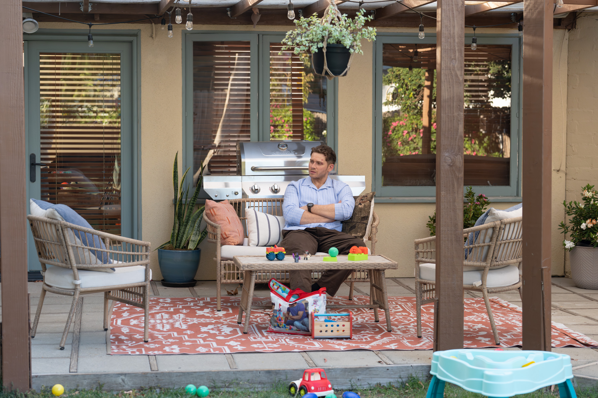
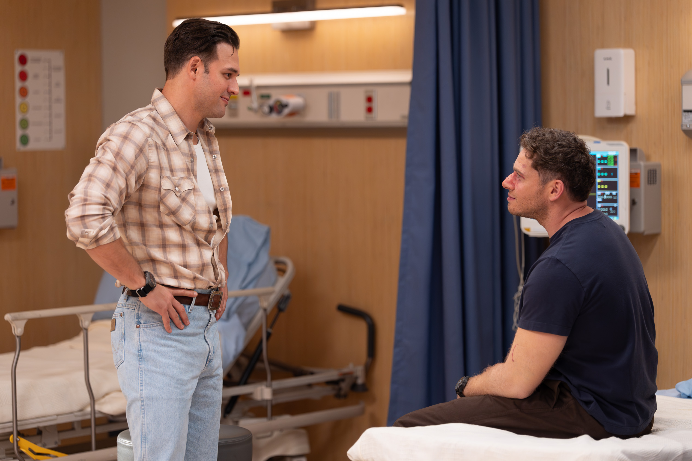
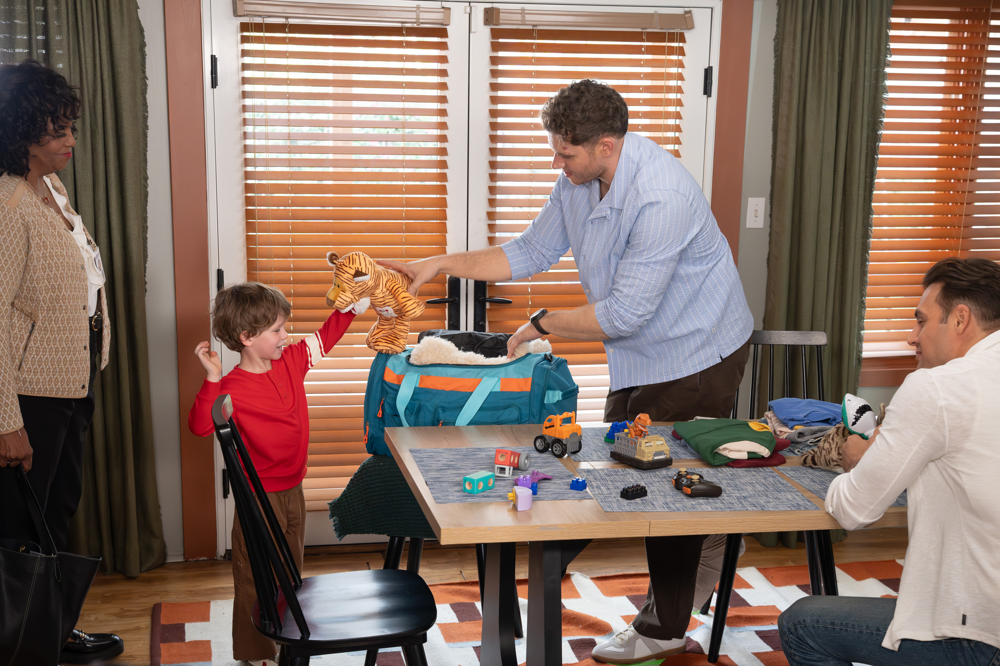
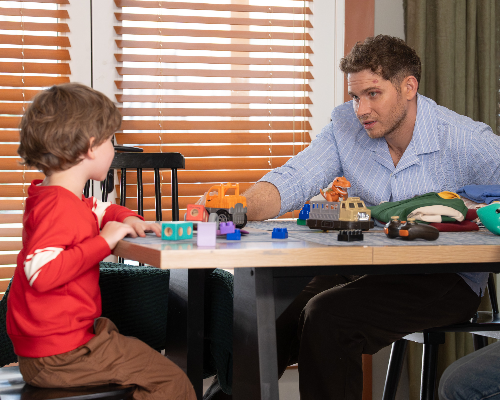
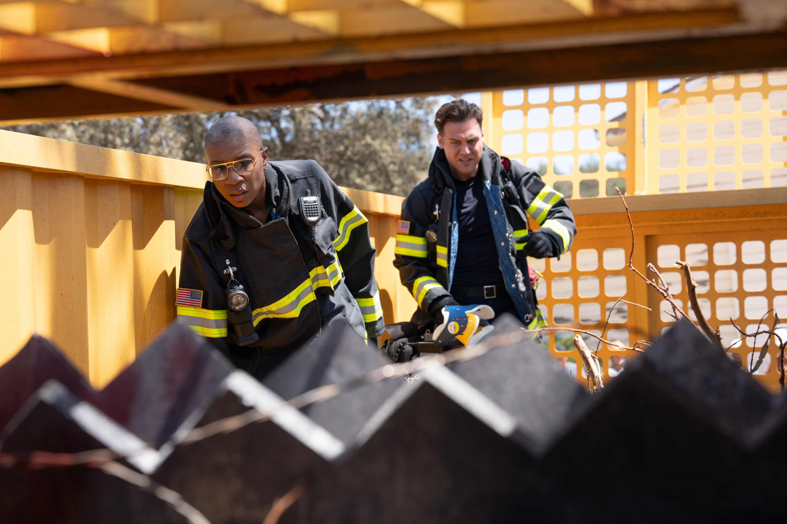
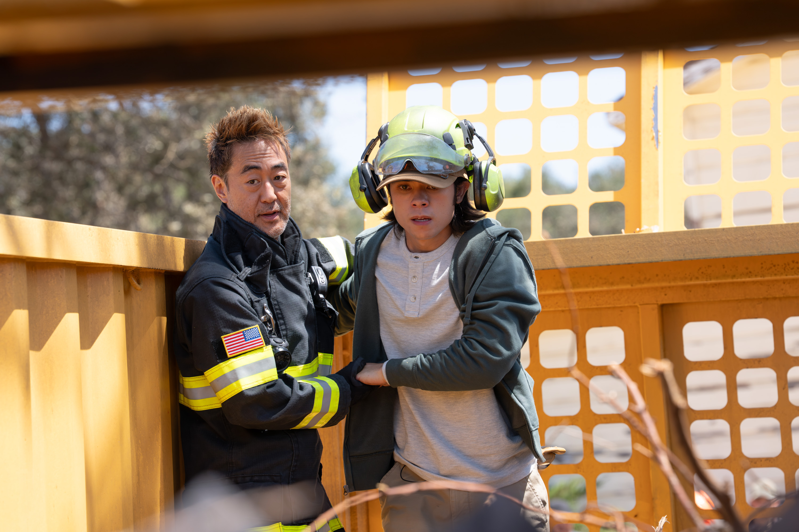
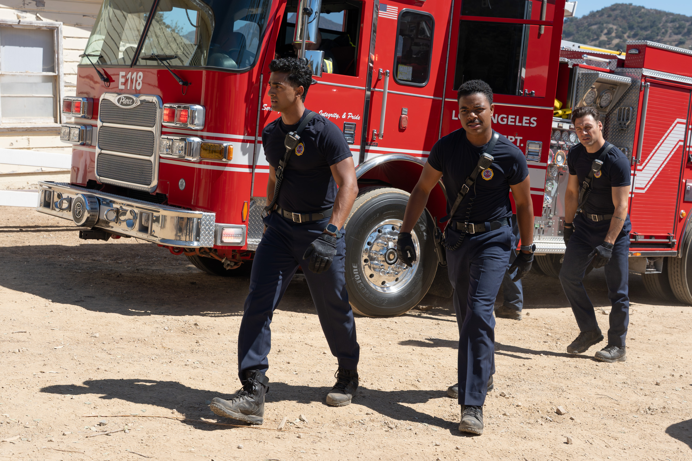
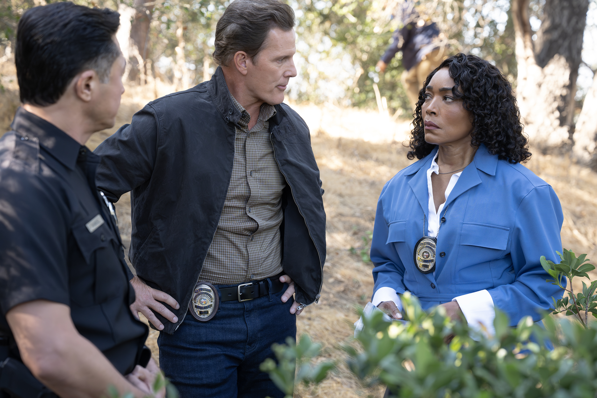

LATEST
Post episode stills: 10x5 Who's your daddy?
 Published:
Published:







Pre episode stills: 10x5 Who's your daddy?
Published:




TV INSIDER:‘9-1-1’s Oliver Stark Teases Buck & Eddie Issue After Premiere Incident With Chris & Theo
Published:
SCREENRANT: 9-1-1’s Peter Krause Explains How Bobby Could Still Be Alive
Published: